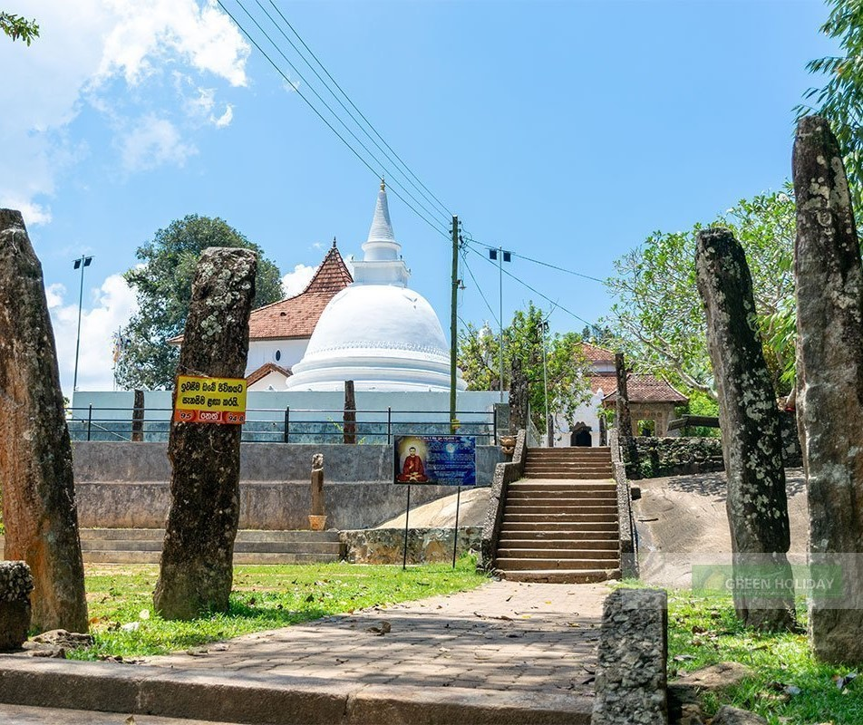
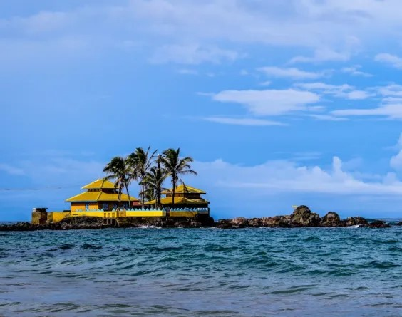
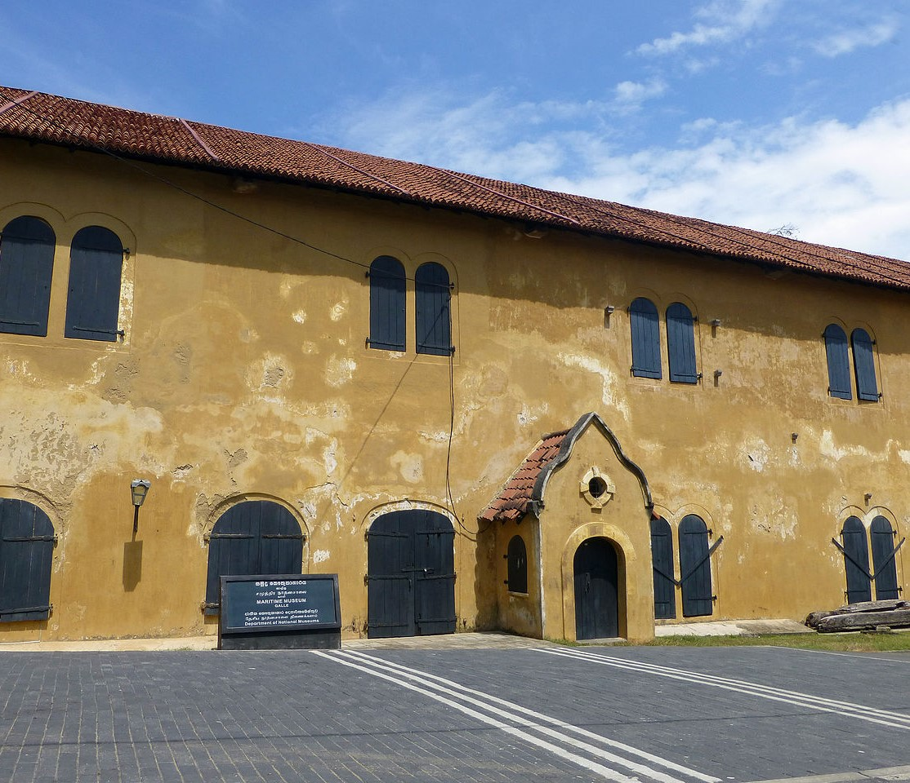

Galapatha Raja Maha Viharaya
The Bentota Galapatha Raja Maha Viharaya is situated approximately 3km inland, along the banks of the Bentota river. This Buddhist temple has a history that traces back to the 12th century AD. Despite facing destruction by the Dutch in the 16th century, it was reconstructed by devoted followers. Access to the temple is through a stone entrance featuring two vertical and two horizontal wooden columns. The vertical columns are adorned with intricate carvings of the Narilatha motif, believed to originate from the Kandyan era. Inside the main temple structure, there are various statues and paintings of Lord Buddha, including a sizable 25-foot reclining Buddha statue. Within the temple premises, there is an ancient dagoba believed to enshrine the tooth relic of Anubuddha Maha Kassyapa Arahat – a prominent disciple of Lord Buddha. This relic has made the temple a sacred site for Buddhist worshippers. Every August, the temple organizes a grand procession that draws numerous visitors. Visitors are reminded to dress modestly by covering their legs and shoulders when entering the temple.
Seenigama Devol Devalaya
The Seenigama Devol Devalaya, situated on a rock that appears to be floating in the sea about 300 meters from the shore, has a history dating back around 1300 years. Despite its ancient origins, only written records dating back 300 years remain to provide evidence of its past. According to ancient texts, the Devol Devalaya was originally dedicated to Goddess Pattini, with worshippers in Sri Lanka performing rituals in her honor. Many individuals visit Seenigama to seek guidance during difficult times or to recover lost possessions, while others come seeking retribution. There is a belief that visiting the Devol Devalaya can cure incurable illnesses. The temple houses the unique Manimekhala deity, second only to the revered Pattini goddess. Pattini is known as the mother who grants wishes, while Manimekhala is considered the goddess of the sea by the local population. Despite the devastation caused by the 2004 tsunami in Seenigama, the Devol Devalaya miraculously remained unharmed. Today, Seenigama has become a popular tourist destination..
Yatagala Raja Maha Viharaya

Yatagala Raja Maha Viharaya, an ancient Buddhist temple, is believed to have been constructed approximately 2300 years ago, making it one of the oldest rock temples in our nation. It was built during the reign of King Devanampiya Tissa of the Anuradhapura era, when a branch of the sacred Sri Maha Bodhi tree was planted in that vicinity. During the Dambadeniya period, it is said that King Parakramabahu II commissioned the creation of an 18 riyan reclining Buddha statue within the cave of the rock. In the final days of the Kandy kingdom, King Wickrama Rajasinghe bestowed the temple with land and gifts, which are still safeguarded within its premises. Upon entering the temple, visitors are greeted by a magnificent 9-meter-long reclining statue of Lord Buddha. This temple is ingeniously carved into the rock formation and houses numerous statues. Additionally, vibrant and colorful murals depicting significant events from the life of Lord Buddha adorn the walls of this Raja Maha Viharaya. The temple also boasts a vast terrace that offers a breathtaking panoramic view of the surrounding area. In recent times, this entire site has been declared a sacred location, and efforts have been made to restore its former grandeur. Thanks to the government's efforts in rehabilitating the temple's infrastructure, the temple's devotees have generously donated funds to construct a golden fence around the Bodhi tree and have also erected a Samadhi Buddha statue beneath it. Furthermore, the cave, formed by colossal rocks, has been transformed into a meditation hall.
Maritime Museum
The Maritime Museum is the sole institution that educates the public about the marine biological and anthropological aspects of the Southern coastal area. Situated within the historic Dutch warehouse of the Galle fort, which was constructed in 1671, the museum was officially opened to the public on May 9th, 1992. Unfortunately, the devastating Tsunami that occurred on December 26th, 2004, resulted in the complete destruction of the museum and damage to all its exhibits. However, through the Sri Lanka – Netherlands Cultural Co-operation Program, the Royal Government of Netherlands provided financial aid for the reconstruction of the Maritime Museum. After a period of three years dedicated to the reconstruction efforts, the museum has now reopened its doors to the public. The first gallery showcases various types of watercrafts that were historically used for passenger transport and maritime trading in Southern Sri Lanka. Additionally, it presents the traditional lifestyle of fishing communities and exhibits captivating models and replicas of fishing techniques. The second gallery focuses on marine ecosystems, featuring displays of mangroves, coastal plants, turtles, sea birds, and marine mammals, along with their taxonomic details. Visitors can also observe specimens of corals, marine shells, and various invertebrates. Notably, a magnificent whale skeleton is mounted on the roof, providing visitors with a truly awe-inspiring experience.